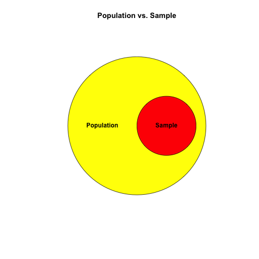

Today, I'll be teaching you the basics of data analysis. It probably makes sense to start by defining the word DATA.
Ramnath Vaidyanathan
Today, I'll be teaching you the basics of data analysis. It probably makes sense to start by defining the word DATA.
According to Wikipedia, "Data are values of qualitative or quantitative variables, belonging to a set of items."
Often the "set of items" that we are interested in studying is referred to as the POPULATION. Data analysis usually involves studying a subset, or SAMPLE, of an entire population.
Here is a diagram showing the relationship between a population and a sample.

Data analysis should always start with a specific question of interest. For example, we might ask "What percentage of people living in the United States are over six feet tall?"
Here, our population of interest is everyone living in the US. Since it's impractical to measure the heights of over 300 million people, we could instead choose 100 people at random and measure their heights. Our hope would be that this sample of 100 people is REPRESENTATIVE of the entire US population.
Let's quickly test your understanding of the term REPRESENTATIVE. If you were interested in studying the health of men living in the US, ages 18-25, which sample would be more representative of the target population: a sample of 50 men who live in a nearby retirement home, or a sample of 50 men who are students at a local university?
Since your target population is all men ages 18-25 living in the US, which of these 2 sample populations more closely matches the population of interest?
Let's try another example to make sure you fully understand the idea of a representative sample. If you were interested in studying a group of African animals and how they adapt to climate change, which sample would be more representative of the target population: a sample consisting of 25 lions and 25 cheetahs, or a sample consisting of 25 kangaroos and 25 koala bears?
Since your target population is all African animals, which of these 2 sample populations more closely matches the population of interest?
Would you like to watch a video on these topics now?
The purpose of analyzing a sample is to draw conclusions about the population from which the sample was selected. This is called INFERENCE and is the primary goal of INFERENTIAL STATISTICS.
In order to make any inferences about the population, we first need to describe the sample. This is the primary goal of DESCRIPTIVE STATISTICS.
If we want to describe our sample using just one number, how would we best do it? A good start is to find the center, the middle, or the most common element of our data. Statisticians call this the CENTRAL TENDENCY.
There are three different methods for finding such a number and the applicability of each method depends on the situation. Those three methods are called the MEAN, MEDIAN, and MODE.
Would you like to watch a brief video on mean, median, and mode?
Mean, median, and mode are all measures of ____________.
Submit and Compare ClearWhich of the following terms are of most importance when describing the central tendency of a data set?
These are the three different methods stated above that are used for describing the center of a data set.
You'll notice the rows are numbered 1 through 54, each representing exactly one car in the dataset. For each car, the following VARIABLES, or characteristics, are reported: 'type' (small, midsize, large), 'price' (USD), 'mpgCity' (city miles per gallon), 'driveTrain' (4WD, front, rear), 'passengers' (total capacity), and 'weight' (lbs).
We'll be focusing on the 'mpgCity' variable in this lesson. For simplicity, let's extract it from our dataset and store it in a new variable.
The ARITHMETIC MEAN, or simply the MEAN or AVERAGE, is the most common measurement of central tendency. To calculate the mean of a dataset, you first sum all of the values and then divide that sum by the total number of values in the dataset.
However, when there are many values of interest, it becomes tedious to do this calculation by hand. Luckily R has a built-in function for computing the mean. The syntax for doing so is 'mean(variable)'.
Extreme values in our dataset can have a significant influence on the mean. For instance, if there was a car in our dataset that got 200 miles per gallon, this would inflate the mean upwards. This could be misleading since none of the other cars get anywhere near this gas mileage.
An alternative to the mean, which is not influenced at all by extreme values, is the MEDIAN. The median is computed by sorting all values from least to greatest and then selecting the middle value. If there is an even number of values, then there are actually 2 middle values. In this case, the MEDIAN is equal to the MEAN of the 2 middle values. Don't worry if this is a little confusing. It will become more clear with practice.
Finally, we may be most interested in finding the value that shows up the most in our dataset. In other words, what the most common value in our dataset? This is called the MODE and it is found by counting the number of times that each value appears in the dataset and selecting the most frequent value.
Look at your table for the 'myMPG' variable that you created above. The first row gives you the value of your variable and the second row gives you the number of times it appears in your dataset. Since the mode is the value of our variable that appears most frequently, what is the mode of your 'myMPG' variable?
This time look at your table for your 'myDrive' variable. What is the mode of your 'myDrive' variable?
Congratulations! You've made it through your first lesson. We introduced basic concepts related to data and data analysis. Specifically, you learned three important measures of central tendency: mean, median, and mode. You also know how to compute these using R.